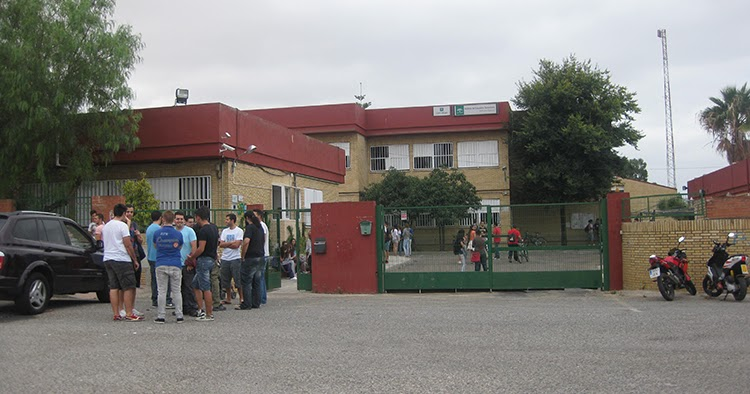

FM
Fernando Murillo


FM
Fernando Murillo
Pues yo soy Fernando Murillo, estudiante y próximo desarrollador web. Estoy estudiando el segundo curso de DAW, en el instituto I.E.S Hermanos Machado, en Dos Hermanas.
En el primer curso, aprendí Java como lenguaje principal, aunque también aprendimos SQL, HTML y CSS.
Siempre me gustó el mundo de la informática, pero cuando probé este curso me gustó mucho más, ya que nos adentramos en el mundo de la programación, un mundo muy abierto donde puedes generar muchas ideas. Si te gusta la programación y diseñar webs, te recomiendo que optes por DAW, no te llevarás una decepción.